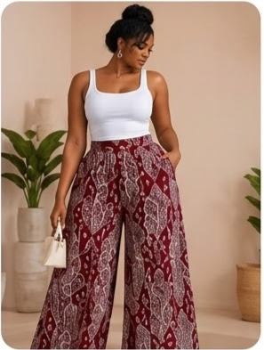
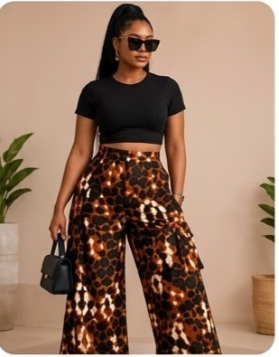
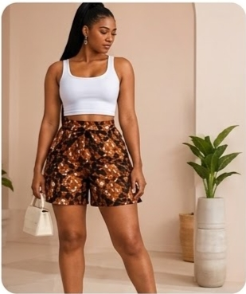
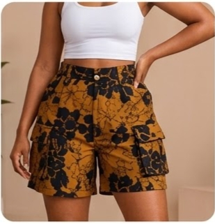
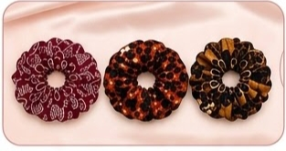
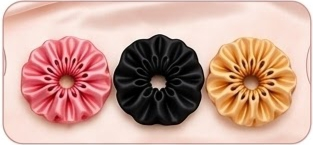

Confection sur mesure
Des vêtements confectionnés selon vos envies pour vous permettre d'exprimer pleinement votre personnalité.
Révélez votre style avec des créations uniques inspirées de la beauté du pagne et de l'élégance du satin.
Des tenues personnalisées aux accesoires tendance, nous donnons vie à vos envies pour vous accompagner avec style au quotidien.
Des créations qui vous ressemblent
Chez Maï Crea'Chic, nous mettons notre passion pour la mode au service de votre style.
Découvrez nos créations et nos services pensés pour vous.
Des vêtements confectionnés selon vos envies pour vous permettre d'exprimer pleinement votre personnalité.
Des palazzos aux motifs colorés pour un style élégant, original et confortable.
Des pièces tendance à associer selon vos envies pour composer des tenues pleines de caractère.
Des chouchous en satin pour apporter une touche délicate et raffinée à vos coiffures.
Notre univers, votre style
Explorez notre collection de vêtement et d'accessoires en satin.
Des pantalons aux motifs expressifspour composer les tenues originales.


Des modèles tendance pour un style décontracté et affirmé.


Des accesoires doux et élégants pour sublimer vos coiffures.


Maï Crea'Chic est une boutique de mode dédiée aux vêtements en pagne et aux accessoires en satin.
Passionnés par la mode et la créativité, nous proposons des pièces qui associent motifs expressifs, style et élégance.
Notre univers est pensé pour celles qui souhaitent affirmer leur personnalité à travers des tenues originales.
Nous proposons également la confection de vêtements sur mesure afin de donner vie à vos envies.
Maï Crea'Chic : Votre style, notre passion!
La mode pensée pour vous
Des créations personnalisées
Des vêtements sur mesure imaginés selon vos envies et vos préférences.
Un style original
Des motifs de pagne et des acessoires en satin pour apporter une touche particulière à vos tenues.
Une attention portée aux détails
Des créations pensées pour associer harmonieusement les tissus, les motifs et finitions.
Un contact simple et rapide
Contactez-nous directement sur WhatsApp pour discuter de vos envies et obtenir des informations sur nos créations.
Vous souhaitez découvrir nos modèles, obtenir des informations ou discuter d'une tenue sur mesure ?
Nous serons ravis d'échanger avec vous.
Votre style, notre passion. Merci de faire confiance à Maï Crea'Chic!